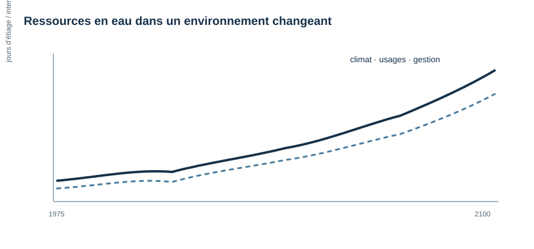

Recherche
Mes recherches portent sur la circulation de l’eau et le transport des éléments dans les milieux souterrains, avec un intérêt particulier pour les aquifères peu profonds et les bassins versants de tête. Je combine observations, traceurs et modélisation pour comprendre leur fonctionnement et développer des approches suffisamment robustes et parcimonieuses pour être déployées au-delà des sites fortement instrumentés.
Aquifères peu profonds et bassins versants de tête
Les aquifères de proche subsurface jouent un rôle majeur dans l’alimentation des cours d’eau et la disponibilité des ressources, mais leurs propriétés restent souvent mal connues. Nous cherchons à comprendre comment la géologie, la géomorphologie et les interactions entre nappe et surface structurent les circulations.
Nous développons des méthodes permettant d’estimer les propriétés hydrauliques à partir de données disponibles à grande échelle : débits, extension et intermittence du réseau hydrographique, données géologiques et observations piézométriques. Ces approches sont progressivement déployées de l’échelle du versant à l’échelle régionale et européenne.

Temps de transfert, qualité de l’eau et réactivité
Le temps passé par l’eau dans le sous-sol contrôle une grande partie du transfert et du devenir des contaminants. Nous utilisons des traceurs environnementaux, notamment les CFC et la silice dissoute, associés à des modèles d’écoulement et de transport pour caractériser les distributions de temps de résidence.
Une partie importante de ces travaux concerne les nitrates. Nous cherchons à comprendre où se produit la dénitrification dans les aquifères, comment elle dépend de la structure géologique et des temps de transfert, et dans quelle mesure ces propriétés peuvent être extrapolées d’un bassin versant à l’autre.

Ressources en eau dans un environnement changeant
Nous utilisons ces connaissances pour étudier l’évolution des ressources sous l’effet du changement climatique et des activités humaines.
Les applications concernent notamment les étiages et l’intermittence des cours d’eau, la disponibilité future des ressources en eau, les systèmes d’alimentation en eau potable et les risques liés aux remontées de nappes dans les zones littorales. L’objectif est de relier des modèles fondés sur les processus aux questions d’anticipation et de gestion à l’échelle des territoires.

Modélisation et outils numériques
La modélisation constitue le fil méthodologique commun de ces recherches. Après des travaux consacrés aux écoulements et au transport dans les milieux fracturés, nous développons aujourd’hui des modèles capables de représenter les interactions surface–subsurface et d’être déployés sur de nombreux bassins versants.
Cette démarche se concrétise notamment dans HydroModPy, une boîte à outils Python destinée à construire, calibrer et comparer des modèles d’aquifères peu profonds à l’échelle des bassins versants.